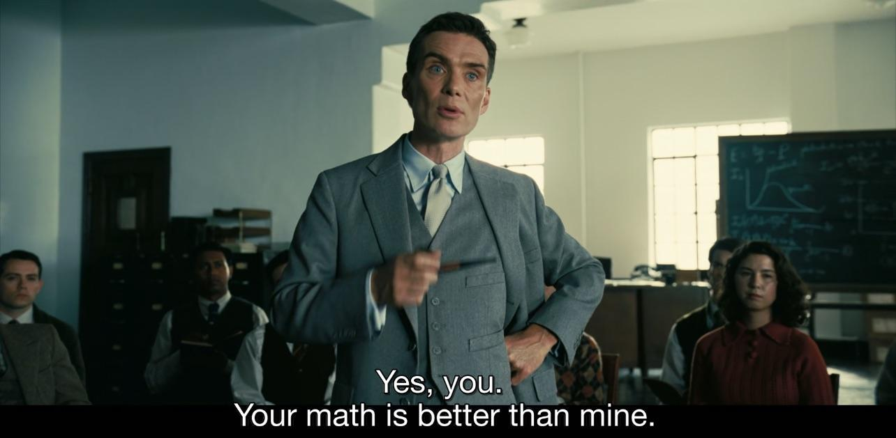

The Monty Hall Problem - Part 2
A mathematical approach to a solution
probability theory
monty hall
Bayes' Law
In Part 1, the solution to the Monty Hall problem required a certain level of intuition to be accepted. The fact that the prior 2/3 probability of choosing the wrong door being fully transferred to the other door that Monty did not open may not be immediately obvious. Therefore, the reasoning provided is not complete.
I prefer to let the mathematics - the language of logic and reason - yield a justified solution, without needing to accept a solution based on intuition.
I will utilize the dependent nature of both Monty’s choices and the choice the contestant has to make after being offered the choice of switching or staying. This dependency between variables indicates the probabilities being conditional probabilities, which are conditional on what information one has at the time of making a choice. For example, Monty chooses his door based on where the car is (which he knows) and what door the contestant chooses. Given this information, the probability that Monty will choose each door is not equal, and may be biased to one or more doors. Similarly, the contestant will have to make a choice on whether to switch based on his initially chosen door and the door that Monty opened.

Conditional probabilities
Let’s begin by defining some variables for our problem.
Let \(X\) describe the door hiding the car, \(Y\) be the door chosen by the contestant, and \(Z\) the door opened by Monty.
Based on the structure and mechanics of the problem, one can see the following:
We assume no bias in the location of the car behind door \(X\).
When Monty chooses his door \(Z\) he knows the values of \(X\) and \(Y\).
The contestant initially chooses \(Y\) at random, as he has no other information at that stage.
When offered the switch, the contestant strategy would be to choose the door with the highest probability of hiding the car - given the initially chosen \(X\) and the door \(Y\) opened by Monty.
In mathematical terms, the door \(X\) with the highest conditional probability \(P(X | Y, Z)\), which should be read as “the probability of \(X\) given \(Y\) and \(Z\)”. This is a conditional probability as it is dependent on known values of \(Y\) and \(Z\).
How to interpret the conditional probabilities?
Given the information in the problem, deducing the desired probability \(P(X | Y, Z)\) by inspection is difficult. It is what we are trying to justify by intuition in Part 1 on this problem as being 2/3 in favour of switching.
Inspection of each variable in the problem
We can however see that the contestant chooses his initial door at random, i.e. each is equally likely to be chosen. Therefore we can reasonably assume the contestant choosing a door at random, i.e. \(P(Y_j)=1/3\) for each door \(j\in\{1,2,3\}\).
Also, the car’s location is not dependent on anything. We can thus assume it being placed behind a door at random, i.e. \(P(X_i)=1/3\) for each \(i \in \{1,2,3\}\).
Therefore, the variables \(X\) and \(Y\) are independent random variables.
However, Monty’s chosen door \(Z\) is dependent on \(X\) and \(Y\). Therefore, we can’t model \(P(Z_k)\) for each \(k \in \{1,2,3\}\) based on the structure and mechanics of the problem. However, we can model the conditional probability of what Monty does, given where the car is and what door the contestant initially chooses. Therefore, we can model \(P(Z_k | X_i, Y_j)\) for various combinations \((i,j,k)\).
The key to the solution - Bayes’ Law
Note that none of the probabilities we could model based on the problem are the one we need, i.e. \(P(X_i | Y_j, Z_k)\). However, we can relate this desired conditional probability with the one conditional probability we could model, i.e. \(P(Z_k | X_i, Y_j)\) using Bayes’ Law.
ImportantBayes’ Law
If \(A\) and \(B\) be different events and that \(P(B) \neq 0\), then
\[ P(A | B) = \frac{P(B | A)P(A)}{P(B)}, \]
where
\(P(A | B)\) is the conditional probability of event \(A\) given that \(B\) is true. This probability is also called the posterior probability of \(A\) given \(B\).
\(P(B | A)\) is the conditional probability of event \(B\) occuring given that \(A\) is true. It is also called the likelihood of event \(B\) given \(A\) in the Bayesian interpretation of probabilities.
\(P(A)\) and \(P(B)\) are the probabilities of independently observing events \(A\) and \(B\). These are also known as prior probabilities of events \(A\) and \(B\) respectively.
The premise of Bayesian probabilities is the notion that models of proabilities for a specific process or problem are in themselves predictions subject to likelihoods. Given certain observations, one aims to find the model with maximum likelihood of having produced the observed events.
Bayes’ Law can therefore be interpreted as relating the model’s likelihood given observed events, to the probability of observing the events given the model.
In our case, the probability model are the conditional probabilities \(P(Z_k | X_i, Y_j)\) for all \((i,j,k)\) we deduced from the structure and mechanics of the problem, and would be analogous to \(P(B | A)\) in the above definition of Bayes’ Law. We should rather refer to \(P(Z_k | X_i, Y_j)\) as being the likelihood of observing \(Z_k\) given \(X_i\) and \(Y_j\).
The posterior probability is the one we are interested in, i.e. \(P(X_i | Y_j, Z_k)\) which would be analogous to \(P(A | B)\) in Bayes’ Law.
Therefore, we can infer our desired conditional probability based on our likelihood model and the prior probabilities.
Bayes’ Law applied to the problem
Note that Bayes’ Law considers one conditional event on each side of the equation.
Therefore, for \(P(Z_k | X_i, Y_j)\) to be analogous to the Bayes’ \(P(B | A)\), we need to interpret the conditional event as being \(B = (X_i, Y_j)\) i.e. the event of obtaining the values \(X_i\) and \(Y_j\) for each door pair \((i,j)\) in the same run of the game.
However, we have established that \(X_i\) and \(Y_j\) are independent events for all pairs \((i,j)\). Therefore, the probability of \(P(X_i, Y_j) = P(X_i)P(Y_j)\). We have the prior probabilities of both \(X\) and \(Y\) as being \(P(X_i)=P(Y_j)=1/3\) for all \(i\) and \(j\).
For our desired probability \(P(X_i | Y_j, Z_k)\) we need the probability of the event \(A = (Y_j, Z_k)\) i.e. the combined event of observing values \(Y_j\) and \(Z_k\) in each run of the game. These are dependent events. We know that Monty’s choice \(Z_k\) is dependent on both \(X_i\) (where the car is) and \(Y_j\) (door chosen by contestant) and we can model \(P(Z_k | X_i, Y_j)\) based on that.
With this, we can determine the required prior \(P(Y_j, Z_k)\). First, using the definition of conditional probability, we can write
\[ P(Y_j, Z_k) = P(Y_j \cap Z_k) = P(Z_k | Y_j)P(Y_j). \]
Then, using the Total Law of Probability on \(P(Z_k | Y_j)\), we obtain for a given \(j\) and \(k\)
\[ \begin{align} P(Y_j, Z_k) &= P(Z_k | Y_j)P(Y_j) \\ &= \left( \sum_{i \in \{1,2,3\}} P(Z_k | X_i, Y_j)P(X_i) \right) P(Y_j) \\ &= P(Y_j)\sum_{i \in \{1,2,3\}} P(Z_k | X_i, Y_j)P(X_i). \end{align} \]
We have now demonstrated our ability to construct all of the required elements in Bayes’ Law for its application to the Monty Hall problem.
Bayesian solution
Bayes’ Law in our case is
\[ \begin{align} P(X_i | Y_j, Z_k) &= \frac{P(Z_k | X_i, Y_j)P(X_i, Y_j)}{P(Y_j, Z_k)} \\ &= \frac{P(Z_k | X_i, Y_j)P(X_i)P(Y_j)}{P(Y_j)\sum_{i \in \{1,2,3\}} P(Z_k | X_i, Y_j)P(X_i)}. \end{align} \]
This will only be valid as long as the denominator \(P(Y_j, Z_k) \neq 0\), which it always is for \(j \neq k\) as Monty never opens the same door as the contestant. The case where \(i = j\) is not possible given our game setup and will not have a defined posterior.
We also have the priors \(P(X_i)=P(Y_j)=1/3\) for all \(i\) and \(j\).
To construct our model of the likelihood \(P(Z_k | X_i, Y_j)\) we need to re-visit Monty’s behaviour in the game from Part 1.
We know he never opens the door chosen by the contestant, i.e. \(Z_k \neq Y_i\) for all door pairs \((i,k)\).
We also know that Monty never opens the door with the car, i.e. \(Z_k \neq X_i\) for all door pairs \((i,k)\).
Since there are only three doors, the number of doors Monty can choose from for any given pair \((X_i, Y_j)\) are either one or two.
If the contestant initially chooses the correct door, i.e. \(X_i = Y_j\), then Monty has two doors to choose from. Since both of these do not hide the car, we can assume he chooses at random.
Therefore,
\[ \begin{align} P(Z_k | X_i, Y_j) = \begin{cases} 1/2 & \text{ with } i=j, k \notin \{i,j\}, \\ 0 & \text{ with } i=j, k \in \{i, j\}. \end{cases} \end{align} \]
If the contestant chooses a wrong door, i.e. which does not hide the car, then Monty has only one door to choose from. Since he must open a door, he will always choose the only remaining door.
Therefore, in this case \[ \begin{align} P(Z_k | X_i, Y_j) = \begin{cases} 1 & \text{ with } i \neq j, k \notin \{i,j\}, \\ 0 & \text{ with } i \neq j, k \in \{i, j\}. \end{cases} \end{align} \]
Our problem now is evaluating the desired posterior \(P(X_i | Y_j, Z_k)\) for all possible \((i,j,k)\). We have 3 options for each index, so there are \(3^3 = 27\) possible combinations. Some of these will not be valid, some will.
For this case it is better to write a short script to calculate all outcomes. We are interested in investigating posterior probability outcomes \(P(X_i | Y_j, Z_k)\) where \(i=j\), which is the probability of winning by not switching, and where \(i \neq j\) which is the probability of winning by switching.
Please run the following code block by pressing Run Code to see the outcome. You can reset the code block by pressing Start Over. The calculation results will appear below the code block.
The posterior is \(P(X_i | Y_j, Z_k)\) - so we should interpret the case where \(i=j\) as the probability of the car being behind the door initially chosen by the contestant, given that Monty opened door \(k\). In other words, the probability of winning by staying with the chosen door.
Result for case \(i=j\), i.e. contestant initially chose correct door
In this case, the calculations show the posterior being \(33.3\%\), or
\[ P(X_i | Y_j, Z_k) = 1/3 \hspace{0.5 cm} \text{ if } i=j, \text{ for all } k \notin \{i,j\}. \]
This means that the posterior probability of the car not being behind the chosen door is \[ P(\neg X_i | Y_j, Z_k) = 1- P(X_i | Y_j, Z_k) = 2/3 \hspace{0.5 cm} \text{ if } i=j, \text{ for all } k \notin \{i, j\}. \]
Which means, we should switch to the other door.
Result for case \(i \neq j\), i.e. contestant initially chose wrong door
For the other case, our posterior \(P(X_i | Y_j, Z_k)\) for \(i \neq j\) is interpreted as the probability of the car being behind door \(i\) given that the contestant initially chose a different door \(j\), and Monty openend door \(k\). In simpler terms, the probability of the car being behind the other remaining door.
The calculations yield a probability of \(66.7\%\) of the car being behind the other door, i.e.
\[ P(X_i | Y_j, Z_k) = 2/3 \hspace{0.5 cm} \text{ if } i \neq j, \text{ for all } k \notin \{i,j\}. \]
By the same logic as above, for this case, the probability of winning by staying is \[ P(\neg X_i | Y_j, Z_k) = 1- P(X_i | Y_j, Z_k) = 1/3 \hspace{0.5 cm} \text{ if } i \neq j, \text{ for all } k \notin \{i, j\}. \]
So we should also switch to the other door.
Therefore, we have shown, for all possible cases, the probability of winning being higher by switching to the other door.
Conclusion
The obtained result using the Bayesian approach to the problem yields the same result as was described in Part 1 - which we also reinforced by simulation. What we have done differently in this solution - is to have the mathematics yield the outcome, without having to rely upon intuition or insight.
The solution for the optimal strategy being to always switch doors does however not mean that it will guarantee a win in each trial - not at all. Instead, what this solution tells us, is that by following the strategy of switching doors, we can expect to win in 66.7% of the time, and lose in 33.3% of the time. We should observe this to be the outcome in repeated trials and approach these values as more and more trials are done. This is what we observed in the simulation in Part 1.
However, keep in mind, the above calculations are not a simulation of the problem, but exact mathematical calculations. The solution is therefore exact and complete, given our assumptions of the problem and our Bayesian interpretation of probabilities.
There is something inherently beautiful in having mathematics, the language of reason and logic, yield us the solution without having any prior bias towards the outcome - although in this case we have an expectation towards the outcome, but none of that was part of the derivation of the above solution.
Given the debates this problem has stirred in the past - based on its counterintuitive solution - a mathematical approach is indeed the only way to justify the outcome.